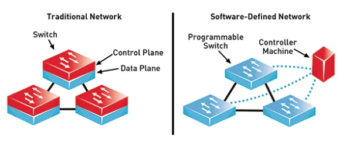

Exemplos de Aplicação do SDN:
- Gerenciamento de redes: Uma das principais aplicações do SDN é a capacidade de gerenciar todos os dispositivos de rede como um único sistema, ao invés de gerenciar cada dispositivo separadamente. Esta abordagem simplifica a configuração e monitoramento da rede.
- Balanceamento de carga: Outro uso comum do SDN é o balanceamento de carga, que pode ser usado para equilibrar o tráfego de rede entre múltiplos dispositivos de forma eficiente. Isso é útil para evitar congestionamentos de tráfego e melhorar o desempenho da rede.
- Segurança da rede: O SDN também pode ser usado para aumentar a segurança da rede. Por exemplo, o Omada da TP-Link usa o SDN para criar uma segregação de tráfego entre a rede do provedor de serviços (ISP) e a rede interna da empresa, permitindo que a empresa controle o acesso à rede de forma segura.
- Monitoramento e análise de tráfego: O SDN também pode ser usado para monitorar e analisar o tráfego de rede, direcionando o tráfego de forma eficiente e ajudando a identificar problemas na rede. Por exemplo, o Omada da TP-Link usa o SDN para monitorar o tráfego de rede e exibir informações em tempo real sobre o uso da largura de banda.
